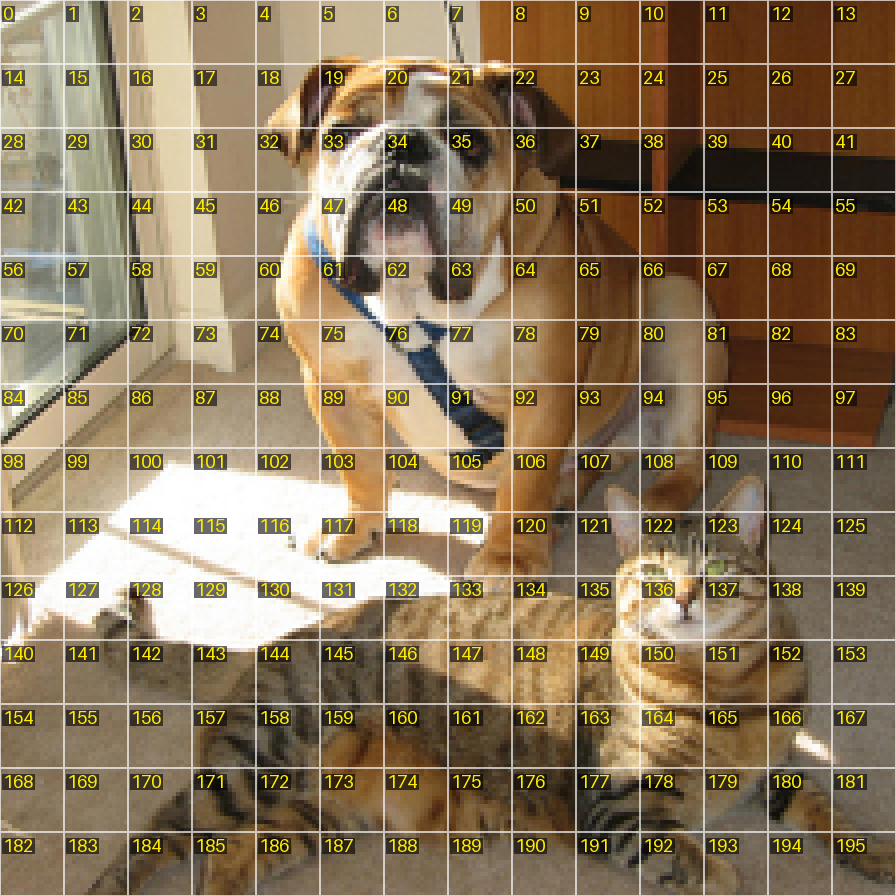

Part 2
The Vision Transformer
Every network in this course has the same body, ViT-S/16, a small Vision Transformer: DINO trains it, SelfPatch trains it, and our three runs train it again from released weights. This part opens it up, from the pixels of one patch to the attention of the real network on a real photograph, and it says at every step why the network is built that way and what each piece does to training. Fact
2.1 Cutting an image into 16 by 16 patches
A Vision Transformer, ViT for short, reads a picture in square pieces. The one every model of this course uses is ViT-S/16: it cuts each picture it receives into patches of 16 × 16 pixels, and the /16 in its name is that patch size. Fact
A picture of side s pixels has s / 16 patches along each side, so (s / 16)² patches in all. Our training crops of 224 pixels give a grid of 14 × 14 = 196 patches; the small crops of 96 pixels give 6 × 6 = 36; the label-free decoder of Part 6, a fixed procedure that cuts a picture into object regions without using any label, reads the whole image at 480 pixels, 30 × 30 = 900 patches. Fact
The photograph this course follows from here to Part 7, a dog and a cat by a door, is 640 × 480 pixels. Its 224-pixel view shrinks the short side to 224 pixels (the long side to 298) and cuts out the centre square, starting 37 pixels from the left. Real

Patches are numbered row by row from 0 at the top left, so the patch in row r and column c of the 14 × 14 grid has the number 14r + c. The bulldog's black nose sits in row 2, column 6: patch 14 × 2 + 6 = 34, the patch this course follows to the end. Real
2.2 From patch to token
Each patch holds 16 × 16 × 3 = 768 numbers: 16 rows of 16 pixels, three colour numbers each. The network turns them into a token, a list of 384 numbers. Fact
The turning is one linear layer, the same for every patch: each of the 384 outputs is a weighted sum of the 768 inputs plus a bias. Its weights form a table of 384 rows and 768 columns, so it holds 384 × 768 + 384 = 295,296 parameters, the learned numbers that training adjusts. The code builds it as a convolution whose 16 × 16 window jumps 16 pixels at a time, which applies one map to every patch; it is called the patch embedding. Fact
Shrunk so that every step can be checked by hand: a patch of 2 × 2 pixels in one colour holds 4 numbers, say (0.2, 0.5, −0.1, 0.4). With the weights (1, 0, 1, 0) and (0, 1, 0, 1) and the biases 0 and 0.1, its token of 2 numbers is (0.2 − 0.1, 0.5 + 0.4 + 0.1) = (0.1, 1.0). Toy
The patch embedding treats every patch alike, wherever it sits, and attention (2.3) compares tokens by their numbers alone: shuffle the tokens and each token's result is shuffled with it. So, without help, a patch of sky in a corner would look exactly like the same sky in the middle. Toy
The network therefore learns a position embedding: a table with one row of 384 numbers for each grid position, added to the token of that position. SelfPatch's table, the one our runs use, has 196 rows, 196 × 384 = 75,264 parameters; DINO's own table has one more row, for the class token below, 197 × 384 = 75,648. For a grid of 6 × 6 or 30 × 30 the 14 × 14 table is resized with bicubic interpolation. Fact
DINO adds one more token that belongs to no patch: a learned class token, written [CLS], of 384 numbers. In DINO's words its role is to aggregate information from the entire sequence; DINO attaches its training head to this token's output and keeps the name class token, although no label is attached to it. With it, DINO's ViT-S/16 reads 196 + 1 = 197 tokens for a 224-pixel crop. Fact
The backbone of SelfPatch, and so of every network our runs train, has no class token and no final LayerNorm, the rescaling step that 2.4 explains: a 224-pixel crop goes in and 196 tokens of 384 numbers come out. SelfPatch keeps its image summary outside the backbone, in a small head with a class token of its own (Part 4). Our DINO start is the released DINO network converted to this backbone: the conversion drops 1,536 parameters (the class token, its position row and the final LayerNorm), and because DINO's class token takes part in every attention step, our architecture document concludes from the code that the converted network no longer computes DINO's own forward pass. Fact
From patches to tokens
How does a picture become a row of tokens, and what does the size of a patch cost?
ToyWhat you are looking at: the picture cut into patches. Point at one to watch its numbers become one token of 384 numbers, and switch the patch size between 8, 16 and 32 pixels to see how many tokens, and how many attention scores per head, each size costs.
Real model versus this toy: the grid sizes, the shapes and the counts are the real ones. The real network learns its patch embedding and its position table in training; this lab uses a fixed random table and a fixed pattern of sines and cosines in their place, so the shades of the token strip carry no learned meaning, and it resizes a patch of 8 or 32 pixels to 16 × 16 before its table. Fact
2.3 Attention, worked
The tokens now pass through a stack of identical blocks, 12 in ViT-S/16. Each block does two jobs. First every token collects information from the other tokens, a step called attention; in DINO's words, the attention layers update the token representations by looking at the other token representations. Then a small network processes every token on its own. Both jobs keep each token at 384 numbers, so one block's output can enter the next. Fact
Attention works like a search. From each token the block makes three new vectors with learned linear layers: a query, what the token is looking for; a key, what it offers to be found by; and a value, what it hands over to whoever finds it. ViT-S/16 makes all three with one layer: 384 numbers in, 3 × 384 = 1,152 out. Fact
Token i compares its query with every token's key, its own included, by a dot product, divides each score by √d, and turns its row of scores into attention weights with a softmax: shares that are positive and add up to 1, computed afresh for every picture. Its new content is the weighted sum of all the values. Without a class token, each head of each block computes 196 × 196 = 38,416 scores for a 224-pixel crop. Fact
Attention for one token
sij = qi · kj / √d
aij = exp(sij) / Σm exp(sim)
oi = Σj aij vj Fact
- qi
- the query of token i: a vector of d numbers, 64 in a head of ViT-S/16 and 2 in the example below Fact
- kj, vj
- the key and the value of token j, d numbers each
- d
- the width of a query and a key in one head; √64 = 8 in ViT-S/16 Fact
- sij
- the score of token j for token i, one number; a head fills a table of 196 × 196 scores for a 224-pixel crop Fact
- aij
- the attention weight, between 0 and 1; every row of the table adds up to 1
- oi
- the output of token i, d numbers: a blend of the values
Rounding: the scores stay exact, written with √2, and every other number is printed to four decimals where a later step needs them and to three otherwise; redo any step from the printed numbers and you get its printed result. Toy
Four tokens A, B, C and D carry queries, keys and values of d = 2 numbers, so every score is divided by √2 ≈ 1.414. Token A's query is (2, 0); the keys are A (1, 0), B (1, 0.2), C (0, 1) and D (−0.5, 0.8). A's dot products are 2, 2, 0 and −1, so its scores are 2/√2 = √2 ≈ 1.414, √2 again, 0 and −1/√2 ≈ −0.707. Toy
The softmax: exp turns the scores into e√2 ≈ 4.1133 twice, e0 = 1 and e−1/√2 ≈ 0.4931, whose total is 9.720, and each divided by the total gives the weights 0.4232, 0.4232, 0.1029 and 0.0507, which add up to 1. Toy
The values are A (1, 0), B (0.9, 0.1), C (0, 1) and D (0.2, 0.8), so A's output is 0.4232 × (1, 0) + 0.4232 × (0.9, 0.1) + 0.1029 × (0, 1) + 0.0507 × (0.2, 0.8) = (0.8142, 0.1858): mostly its own value and B's, whose keys match its query best. Toy
Suppose the loss wants A's output to move, and write g = ∂L/∂oA. Each value is pushed in proportion to its weight, ∂L/∂vj = aAj g. The query turns towards the keys whose values would move the output the way the loss wants and away from the others: ∂L/∂qA = (1/√d) Σj aAj (g · vj − g · oA) kj, and each key moves along the query by the same factor. Every term is scaled by its attention weight and by 1/√d. Toy
Worked: let the loss be ½ |oA − vC|², so that A should take C's value (0, 1). It is ½ (0.8142² + 0.8142²) = 0.663, and g = oA − vC = (0.8142, −0.8142). How well each value would serve, g · v, is 0.8142, 0.6514, −0.8142 and −0.4885 for A, B, C and D; their average weighted by the attention weights, 0.4232 × 0.8142 + 0.4232 × 0.6514 + 0.1029 × (−0.8142) + 0.0507 × (−0.4885), is g · o = 0.5117. Key j's part is the factor (1/√2) aAj (g · vj − g · o) times the key itself; the factors are 0.0905 for A, 0.0418 for B, −0.0965 for C and −0.0359 for D, so ∂L/∂qA = 0.0905 × (1, 0) + 0.0418 × (1, 0.2) − 0.0965 × (0, 1) − 0.0359 × (−0.5, 0.8) = (0.150, −0.117). Toy
One step of size 1 against the gradient moves A's query from (2, 0) to (1.850, 0.117): its weight on C rises from 0.103 to 0.119, and the loss falls from 0.663 to 0.625. Toy
Take ten such steps in Lab 2B and A's weight on C grows from 0.103 to 0.363 while the loss falls from 0.663 to 0.155: attention learns where to look by moving its queries and keys. Toy
In the real code every linear layer starts with random weights of spread 0.02 and biases of 0, and SelfPatch's official script trains from such random weights. Fact
So at the start of training from scratch the queries and keys are small, every score is close to 0 and every row of weights is close to even: each token takes a nearly even blend of all the values, and training moves the layers until some scores stand out. Toy
On the followed photograph the released SelfPatch network's last block gives rows that concentrate on a small part of the picture, while the converted DINO network's last block, run without the class token it was trained with, spreads every row over most of the 196 patches (Lab 2D below). Real
ViT-S/16 runs attention as 6 heads side by side. The block cuts each token's query, key and value into 6 slices of 64 numbers, and each head does the whole computation on its own slice, with its own scores and weights; 6 × 64 = 384. The heads' results are joined back into 384 numbers and pass through one more linear layer. Inside a head every score is divided by √64 = 8. The whole step is called multi-head self-attention, MSA for short. Fact
Attention by hand, and how it learns
How does one token decide how much to take from each of the others, how does it learn to look elsewhere, and what do six heads see?
ToyWhat you are looking at: three panels. First, the four tokens of the walk above, whose queries, keys and values you can edit, with their scores, weights and outputs, and a button that takes one gradient step on the asking token's query. Second, random queries and keys of a width you choose, with and without the division by √d. Third, six toy heads side by side on the picture's 14 × 14 patches; click a patch to make it ask.
Real model versus this toy: a real head works with queries and keys of 64 numbers made by learned layers, and ViT-S/16 runs 6 heads in each of its 12 blocks. The toy heads compare simple measurements of the patches (their colour, brightness, texture, position and edges), so they show how attention spreads its weight and say nothing about what the real network attends to; Lab 2D shows that. Fact
2.4 One block
One block of ViT-S/16 does this to the tokens Z it receives: a LayerNorm, attention, add the input back; a LayerNorm, the MLP, add again. DINO calls the adds skip connections and the order pre-norm, each LayerNorm coming before its step. In symbols, U = Z + MSA(LN(Z)) and Z′ = U + MLP(LN(U)). Fact
A LayerNorm works on one token at a time. It subtracts the mean of the token's 384 numbers, divides by the square root of their variance plus ε = 1e-6, then multiplies each number by a learned scale γ and adds a learned shift β, which start at 1 and 0. Fact
LayerNorm
LN(x)i = γi (xi − μ) / √(σ² + ε) + βi, with μ = (1/d) Σi xi and σ² = (1/d) Σi (xi − μ)² Fact
- x
- one token: d = 384 numbers in ViT-S/16, 4 in the example Fact
- μ, σ²
- the mean and the variance of the token's numbers, one number each
- ε
- a tiny constant, 1e-6, that keeps the division away from 0 Fact
- γ, β
- the learned scale and shift, d numbers each, starting at 1 and 0 Fact
- x̂
- the normalised token, (x − μ) / √(σ² + ε): mean 0 and spread 1
Rounding: numbers are printed to four decimals where a later step needs them; redo any step from the printed numbers and you get its printed result. Toy
Take x = (2, 0, −1, 3) with γ = 1 and β = 0. The mean is 1 and the deviations are (1, −1, −2, 2), so the variance is (1 + 1 + 4 + 4) / 4 = 2.5 and the spread √(2.5 + ε) is 1.5811. LN(x) = (0.6325, −0.6325, −1.2649, 1.2649): mean 0 and spread 1. Toy
Multiply the token by 10 and add 5, (25, 5, −5, 35), and LayerNorm returns the same (0.6325, −0.6325, −1.2649, 1.2649): it forgets a token's overall size and offset and keeps its shape. Toy
Write g for the gradient at the output. The gradient at the input is ∂L/∂x = (γg − mean(γg) − x̂ · mean(γg x̂)) / √(σ² + ε): LayerNorm takes away the gradient's average, because shifting all the numbers together would not change the output, and its part along x̂, because stretching the token would not change it either, and it divides what is left by the spread. The learned parts get ∂L/∂γi = gi x̂i and ∂L/∂βi = gi. Toy
Worked, with g = (1, 0, 0, 0) and γ = 1: mean(g) = 0.25 and mean(g x̂) = 0.6325 / 4 = 0.1581, so ∂L/∂x = ((1, 0, 0, 0) − 0.25 − 0.1581 x̂) / 1.5811 = (0.4111, −0.0949, −0.0316, −0.2846), whose four numbers add up to 0. Toy
Whatever the blocks before it do to a token's size, attention and the MLP always read numbers of mean 0 and spread 1, scaled by γ and shifted by β, which the network learns for every number. In Lab 2C's stack of twelve toy blocks, raise the spread of the toy weights to 0.4: the tokens leaving the stack without LayerNorm average 45.944, those of the stack with it 5.991. Toy
LayerNorm also helps the toy stack learn. On Lab 2C's toy task, with the skips in place, 100 steps of plain gradient descent take the loss from 3.155 to 0.002 with LayerNorm and from 2.346 only to 0.137 without it; the lab's loss chart draws the two curves as they grow. Toy
The MLP, short for multilayer perceptron, processes each token on its own: a linear layer widens it from 384 to 1,536 numbers, the GELU of Part 1 bends every number (the exact GELU, x Φ(x)), and a second linear layer narrows it back to 384. The hidden width, 1,536, is four times the token width. Fact
Each step's result is added onto what went into it: the attention branch's output onto Z, the MLP branch's output onto U. These adds are the residual connections: the token itself passes straight through, and the block learns a change to it. Fact
The residual block
U = Z + MSA(LN(Z))
Z′ = U + MLP(LN(U)) Fact
- Z
- the tokens entering the block: 196 × 384 numbers for a 224-pixel crop Fact
- MSA, MLP
- the two branches: multi-head self-attention among the tokens, the MLP on each token
- LN
- a LayerNorm; each branch has its own Fact
- U
- the tokens halfway, after the first add
- Z′
- the tokens leaving the block, the same shape as Z
Rounding: the vectors are printed to four decimals; redo any step from the printed numbers and you get its printed result. Toy
In Lab 2C token A enters a toy block as (1, 0.5, −0.5, 0). Its attention branch returns (−0.0142, 0.0167, 0.0283, 0.0005), so UA = (0.9858, 0.5167, −0.4717, 0.0005); its MLP branch returns (0.0878, 0.2425, −0.0806, 0.0612), so it leaves as (1.0736, 0.7592, −0.5523, 0.0617): its own numbers plus two corrections smaller than itself. Toy
Because Z′ = Z + F(Z), the gradient that reaches Z is ∂L/∂Z = ∂L/∂Z′ + (∂F/∂Z)T ∂L/∂Z′: one copy through the skip, unchanged, and one through the branch. In the second term, ∂F/∂Z is the branch's table of slopes, how much each of its output numbers moves when each input number moves, and the T, a transpose, turns the table round so that it carries the gradient backwards, from the outputs to the inputs, as backpropagation does (Part 1, section 1.4). Stack twelve blocks and the copies through the skips make a direct path from the loss to the first block. Toy
A one-number toy shows the size of the effect: a branch f(z) = 0.1z repeated in twelve blocks scales the gradient by 0.112 = 10−12 without the skips and by 1.112 ≈ 3.138 with them. In Lab 2C's stack of twelve toy blocks the gradient that reaches block 1 has size 1.3 with the skips and 0.000036 without them. Toy
On Lab 2C's toy task, 100 steps of plain gradient descent take the twelve-block stack's loss from 3.155 to 0.002 with the skip connections, and from 0.816 only to 0.630 without them: without the skips the first blocks barely learn, and the output keeps little of what came in. The toy draws its weights with about the gain of the real network's start, and with it each block adds corrections smaller than the tokens it receives. Toy
One block holds 1,774,464 parameters, almost all of them in its four linear layers. Fact
| Part of one block | Shape | Parameters |
|---|---|---|
| Query, key and value layer | 384 → 1,152, with biases | 443,520 |
| Output layer after attention | 384 → 384, with biases | 147,840 |
| MLP, first layer | 384 → 1,536, with biases | 591,360 |
| MLP, second layer | 1,536 → 384, with biases | 590,208 |
| Two LayerNorms | a scale and a shift of 384 each | 1,536 |
| One block | 1,774,464 |
One block, every number
What happens to four tokens inside one block, which way does the gradient flow back, and what do the skips and LayerNorm do to twelve blocks?
ToyWhat you are looking at: above, one toy block on four tokens of four numbers with two heads of two and an MLP of sixteen: every number of the token you follow, forward from the input to the output and backward from the output's gradient to the input's, with the skips and the LayerNorms switchable. Below, twelve such blocks: how big the tokens are after each block, how big the gradient is that reaches each block, and a toy task trained for 100 steps with and without the skips, and with the skips but without LayerNorm.
Real model versus this toy: the order of the steps, the exact GELU, the LayerNorm with ε = 1e-6, the MLP four times as wide as the token and the starting biases of 0 are the real ones; the widths are cut from 384 to 4, from 6 heads to 2 and from 1,536 to 16, and the weights are random toy numbers. The toy task and the plain gradient descent are the lab's own; the real runs use AdamW (Part 5). Fact
2.5 Twelve blocks: ViT-S/16 in numbers
Stack the pieces and you have the backbone: the part of the network that turns a picture into tokens. ViT-S/16's backbone in our runs holds 21,664,128 parameters, about 21.7 million, almost all of them in its 12 blocks. Fact
DINO, SelfPatch and our runs each keep two copies of the network, with one architecture: the student, which the loss trains by gradient, and the teacher, built from the student's past weights as a moving average and given no gradient (Part 3). The rule and the decoder of later parts read the teacher's last block. Fact
| ViT-S/16 | Size |
|---|---|
| Transformer blocks | 12 |
| Token width | 384 numbers |
| Attention heads per block | 6, each 64 numbers wide |
| Patch size | 16 × 16 pixels |
| MLP hidden width | 1,536 numbers |
| LayerNorm ε | 1e-6 |
| What enters: one large crop | 3 × 224 × 224 = 150,528 numbers |
| What leaves in our backbone | 196 × 384 numbers; 36 × 384 for a crop of 96 pixels |
| What leaves in DINO's own network | 197 × 384 numbers, the class token included |
| Parameters in our runs | 21,664,128, about 21.7 million |
| Part of the backbone | Parameters |
|---|---|
| Patch embedding: 384 × 768 weights and 384 biases | 295,296 |
| Position embedding: 196 × 384 | 75,264 |
| 12 blocks of 1,774,464 each | 21,293,568 |
| The backbone in our runs | 21,664,128 |
Two readings of the last block matter later. The tokens are the block's output, 196 vectors of 384 numbers for a 224-pixel crop and 36 for a 96-pixel one: our contrastive rule (Part 5), which chooses for each patch the patches its token should move towards and away from, ranks the teacher's tokens of every training crop by their cosine, and the linear probe (Part 6), one linear layer trained with labels on the frozen tokens after training, reads them at 224 pixels. The keys are made inside the last block's attention, before any score: each is the key slice of block 12's query-key-value layer applied to the layer-normalised output of block 11, ki = Wk LN1(zi) + bk. MaskCut and TokenCut, two label-free object finders, read these keys as patch features, and the decoder of Part 6 reads them from the teacher at 480 pixels: 900 keys of 384 numbers. Fact
2.6 Real attention
The lab below loads the last block's attention of real networks on the followed photograph's 224-pixel view, computed once with the networks' own code: the converted DINO network (run 2's start), the released SelfPatch network (the start of runs 1 and 3), and run 2's teacher after its 20 epochs. Each holds 6 heads × 196 × 196 weights: every head gives each patch a row of 196 weights that add up to 1. Real
The class token's row comes from two other sources. The original DINO network, with its class token and its final LayerNorm, gives its last block's 197 × 197 weights for each head on the same view; row 0 is where [CLS] looks. Real
The released SelfPatch network and run 2 keep their class token in the aggregation head (Part 4), which reads the 196 final tokens in two blocks of class attention; the bundle holds that class token's rows in both blocks. The converted DINO network has no such row, because its aggregation head was never trained. Real
To compare rows, the lab gives each one a spread: its entropy, −Σ a ln a in nats, and e to that power, the number of patches whose equal shares would be as spread out. A row spread evenly over 196 patches has the largest entropy, ln 196 ≈ 5.278 nats, worth all 196 patches; a row with all its weight on one patch has 0, worth one patch. Fact
Click the dog's nose, patch 34. Under the released SelfPatch weights most heads put most of their weight on a few patches, each head on a different part of the dog, and head 4 also on the cat's face; under the converted DINO network the same heads spread over most of the picture. Across all 196 rows of all six heads, a SelfPatch row is worth less than a quarter of the patches on average, a converted DINO row about four fifths of them, and a row of run 2's teacher a little over half. Real
Switch to the class token of the original DINO network: in head 1 its five largest weights sit on the dog's face, on patches 63, 49, 35, 33 and 47. Real
DINO's authors report that the attention of self-supervised ViTs carries the layout of a scene: masks made by keeping 60 % of a ViT-S/16's last-layer attention, compared with the object masks that people drew on PASCAL VOC's photographs (labels used for that measurement only), reach a Jaccard similarity, the area two masks share divided by the area they cover together, of 45.9 for DINO, 27.3 for a supervised ViT and 22.0 for random weights. Part 3 asks why. Fact
The lab's second panel follows patch 34 through all twelve blocks of run 2's teacher: in block 1 one head looks almost only at the patch itself; in blocks 3 to 10 several heads concentrate on a few patches; in blocks 11 and 12 every head spreads over most of the picture. Real
Real attention
Where does the real network look when you click a patch, head by head, and how does that change from network to network and from block to block?
RealWhat you are looking at: the last block's attention of four real networks on the followed photograph: the chosen row in a large map and its six heads in small maps, the brighter a patch the more weight it gets, the five largest weights outlined; the class token's row where a network has one; and, in the second panel, run 2's patch 34 in each of its twelve blocks with a table of every row's spread.
Real model versus this toy: the only toy part is the photograph under the weights. Your browser draws the same 224-pixel view of the same JPEG file, but it decodes and resizes with its own filters, where the bundle's script used the Python imaging library PIL and its bicubic filter, so single pixels can differ from the script's by a few levels. Toy
The real numbers: the weights are the bundle's, computed once from the real networks on PIL's pixels of that view. Real
Glossary of this page
- Attention
- The step of a transformer block in which every token takes a weighted sum of all the tokens' values, weighted by how well its query matches each token's key.
- Attention head
- One of several attention computations that run side by side in a block, each on its own slice of the queries, keys and values, with its own scores and weights. ViT-S/16 has 6 heads of 64 numbers in every block.
- Attention weight
- One share of a row of attention: the softmax of a query's scores against all the keys, so the shares of a row are positive and add up to 1. They are computed afresh for every picture, unlike the learned weights of the network.
- Backbone
- The part of the network that turns a picture into tokens; in this course, ViT-S/16. The tokens and keys that later parts read come out of it.
- Bicubic interpolation
- A smooth way to resize a grid of numbers, which estimates each new value from nearby old values with cubic curves.
- Checkpoint
- A saved copy of a network's weights, written during or after training so that it can be loaded again later. Our runs write one every 5 epochs and one at the end; SelfPatch's authors published the checkpoint of their trained network.
- Class attention
- Attention in which only one token asks: the query token attends to itself and to the set it summarises, and it alone is updated. SelfPatch borrows it from the CaiT model of Touvron and colleagues.
- Class token [CLS]
- An extra learned token that DINO adds to the patch tokens. It belongs to no patch, gathers information from all of them, and its output summarises the picture. The backbone our runs train has none; SelfPatch keeps its class token in a separate head.
- Convolution
- An operation that slides one small table of weights across a picture and computes a weighted sum at each place. With a window of 16 × 16 pixels that jumps 16 pixels at a time, it applies the same linear map to every patch.
- Entropy
- How spread out a set of shares is: minus the sum of each share times its natural logarithm, in nats. It is 0 when one share is 1 and ln n when n shares are equal; e to the entropy is the number of equal shares that would be as spread out.
- Forward pass
- One computation of a network's output from its input.
- Jaccard similarity
- The area two masks share divided by the area they cover together: one for identical masks and zero for masks that do not overlap.
- k-NN classifier
- A simple test of features with labels: a picture gets the label that wins a vote among the k labelled pictures whose features lie closest to its own. DINO weights the vote and lets the 20 nearest take part.
- Key
- In attention, the vector that a token offers to be matched against the other tokens' queries. The decoder of Part 6 reads the last block's keys as patch features.
- Label propagation
- A test of patch features that uses labels: the object masks drawn on the first frame of a video are carried from frame to frame by matching each patch with its nearest neighbours among the frozen patch features. SelfPatch reports it on the DAVIS 2017 videos.
- Label-free decoder
- A fixed procedure that turns a network's features into object masks without using any labels. The thesis's decoder reads the teacher's last-block keys.
- LayerNorm
- A step that shifts and rescales the numbers of one token to mean 0 and spread 1, then multiplies them by a learned scale and adds a learned shift. ViT-S/16 has one before every attention step and every MLP.
- Linear classifier
- A single linear map from features to class scores, fitted with labels: a common test of what the features already contain.
- Linear probe
- One linear layer trained with labels on top of a frozen network's tokens. How well it reads the classes off the tokens measures how linearly the tokens separate them; the network itself does not change.
- MLP
- Short for multilayer perceptron: linear layers with a bend such as the GELU between them. In each block it widens every token from 384 to 1,536 numbers and narrows it back.
- Multi-head self-attention (MSA)
- Attention run as several heads side by side inside one block, among the tokens of one picture, followed by a linear layer that joins the heads' results.
- Negative
- A patch that a rule chooses for an anchor to disagree with. Under our rule: a patch of the same crop at or below the crop's low threshold, never one of the anchor's positives, at most 48 per anchor.
- Patch
- A square of 16 × 16 pixels cut from the picture; ViT-S/16 turns each patch into one token. A crop of 224 pixels holds 196 patches.
- Patch embedding
- The learned linear layer that turns each patch's 768 numbers into a token of 384 numbers, the same for every patch; it has 295,296 parameters.
- Position embedding
- A learned table with one row per grid position, added to the tokens so that the network can tell where each patch came from.
- Positive
- A candidate that the selection rule keeps for an anchor; SelfPatch keeps the 4 most similar of the 8. The anchor's target is built from its positives only.
- Projection head
- The small network after the backbone that turns a crop's summary into scores over the prototypes. It exists for training; later tasks read the backbone.
- Query
- In attention, the vector that says what a token is looking for; it is matched against every token's key.
- Residual connection
- Adding a step's input back onto its output, so that the step only has to learn a change and the token passes straight through. DINO calls them skip connections.
- Student
- The network that learns from the loss.
- Teacher
- The network whose outputs the student learns to match. In DINO it is an average of the student's past weights and receives no gradient.
- Token
- The vector of 384 numbers that stands for one patch, or for the class token, inside the network.
- Transformer block
- The repeated unit of a Vision Transformer: attention among the tokens, then an MLP on each token, each with a LayerNorm before it and a residual connection around it. ViT-S/16 stacks 12 of them.
- Value
- In attention, the vector that a token hands over; each token's output is a weighted sum of the values.
- ViT (Vision Transformer)
- A network that cuts a picture into patches, turns each patch into a token and passes the tokens through transformer blocks.
- ViT-S/16
- The small Vision Transformer with patches of 16 pixels that every model of this course uses: 12 blocks, tokens of 384 numbers, 6 heads.